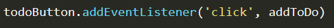
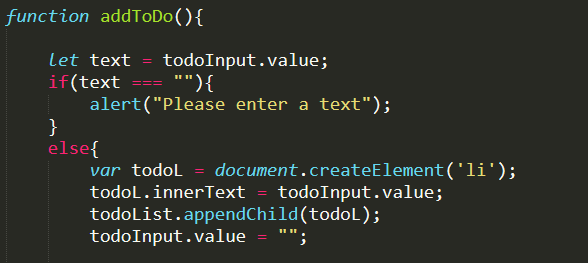
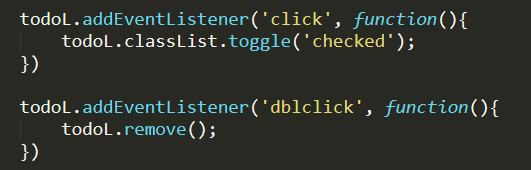

I'm going to show you a simple todo app where you can make a list of tasks to complete. You can either line through it or delete it once you have completed the tasks.
You can find more information about my html and how I styled the app on my Github for this project.
First, I store the html elements in the let keyword so that they can be used in different functionalities.
When the user clicks the button, the addToDo function is called.
If there is no text in the input when the user clicks the add button, the app will display an alert message. For the else statement, the variable todoL create an element li whenever the user add a text to the list. The todoInput.value = "" removes the old text's input value.
The user will be able to line through the list since todoL obtains the classList of checked from the css file. Also, the user can delete the list by double clicking it.
That is all for today. You can take a look at the source code here or try it out here.